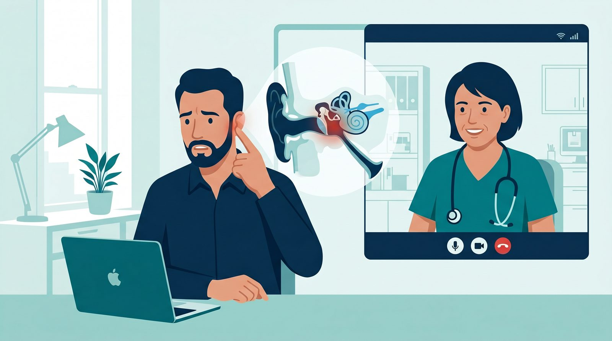
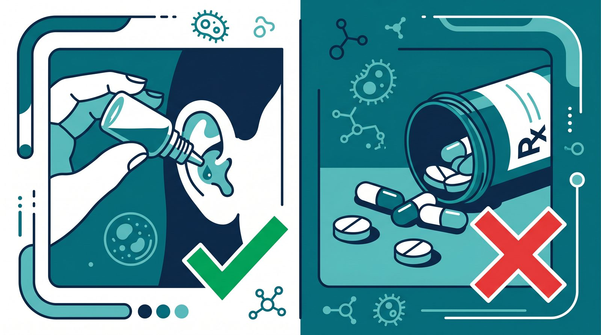

Key Takeaways
- A 2022 UK pilot of 58 adults referred for hearing loss or tinnitus avoided hospital attendance in 65% of cases, with 95% diagnostic concordance and 98% satisfaction.[1]
- The guideline recommends topical ear drops as initial therapy for uncomplicated otitis externa, yet a 2021 systematic review found oral antibiotics alone were prescribed for 6% to 30% of patients managed in primary care.[2][3]
- Pain when the outer ear is moved is the classic sign of swimmer's ear, but the guideline asks clinicians to distinguish it from other causes of ear pain, and pneumatic otoscopy is recommended to help tell it apart from a middle-ear infection.[2][4]

The Ear Infection Prescribing Problem
Ear infections are a common reason adults seek same-day care. The pain is unmistakable, the patient wants treatment fast, and with the right drops most people with swimmer's ear improve within 24 to 72 hours.[4] So where does the system fall down?
Often, on treatment. For one of the two main ear infections, an oral antibiotic is usually the wrong first choice, yet it is still prescribed.
A 2021 systematic review of seven studies found that oral antibiotics alone were prescribed for 6% to 30% of patients with acute otitis externa (swimmer's ear) managed only in primary care, most often amoxicillin or co-amoxiclav.[3] The American Academy of Otolaryngology–Head and Neck Surgery Foundation guideline is clear: clinicians should prescribe topical drops as initial therapy for uncomplicated otitis externa, and should not prescribe oral antibiotics unless the infection extends outside the ear canal or specific host factors call for them.[2] The gap between the two has consequences for the patient's ear and for antibiotic resistance.[3]
A video visit with a physician who follows the guideline can deliver that guideline-based treatment. That's the point I want to make in this article.
Otitis Externa vs. Otitis Media: What Your Doctor Hears
The two ear infections adults get look similar to a patient. Both hurt. Both affect the ear. But they are different problems with different treatments. The history gives useful clues, and an ear exam settles the question.
Otitis externa (swimmer's ear) is an infection of the ear canal skin. Typical symptoms are ear pain, itching and a sense of fullness, sometimes with discharge, and the classic finding is tenderness when the outer ear or the flap in front of the canal is moved. Swimming is the most common risk factor; hearing aids, earbuds, earplugs and cleaning or scratching the canal also raise the risk.[4]
Otitis media is an infection behind the eardrum, in the middle ear space, and is often set off by a cold or flu. Ear pain, a feeling of pressure or fullness, and difficulty hearing are common.[8] Unlike swimmer's ear, moving the outer ear is not tender.[4]
These differences help, but symptoms alone are not always enough. The guideline asks clinicians to distinguish otitis externa from other causes of ear pain and discharge, and pneumatic otoscopy is recommended to help separate it from otitis media.[2][4] The distinction matters because the treatment is different. Uncomplicated otitis externa is treated first with topical ear drops,[2] while acute otitis media is treated with antibiotics taken by mouth.[4] Amoxicillin and co-amoxiclav, the oral antibiotics most often given for swimmer's ear, are inactive against its usual bacteria and can lead to avoidable side effects and antibiotic resistance.[3]

What the Evidence Shows
The published data on telehealth for adult ear infections is thin, so it helps to be clear about what each source does and does not show.
A 2022 UK pilot feasibility study of 58 adult otology patients (aged 18 to 70, referred with hearing loss or tinnitus) used an audiology-led community clinic and a smartphone otoscope, with ENT clinicians reviewing the images remotely. 65% avoided any hospital attendance, and 75% had their pathway shortened by one hospital visit. A blinded consultant otologist found 95% diagnostic concordance, and patient satisfaction reached 98%. Still, 24% needed an extra face-to-face appointment because the eardrum view was incomplete or more examination was needed, and in the 12 patients who also had an in-person review, concordance was 83.3%. The authors judged the service feasible, safe, and non-inferior to the traditional outpatient model in the included patient group.[1] These patients were not being treated for ear infections.
The main guideline for swimmer's ear is the AAO-HNSF clinical practice guideline, written for patients aged 2 years and older. It recommends topical drops, not oral antibiotics, as initial therapy for uncomplicated otitis externa.[2]
A 2021 systematic review of primary care prescribing found that topical antibiotics were prescribed for 77% to 95% of patients, but when oral antibiotics were chosen, the choice frequently did not cover the typical bacteria. The authors called for better primary care prescribing of topical therapy.[3]
The Antibiotic Stewardship Angle
Here's the piece most patients find surprising. For acute otitis externa, the oral antibiotics you are most likely to be given do not cover the bacteria that usually cause it.[3]
Here is why. The main bacteria in swimmer's ear are Pseudomonas aeruginosa and Staphylococcus aureus.[4] Amoxicillin and co-amoxiclav, the oral antibiotics most often prescribed for it, are inactive against these pathogens.[3] Topical therapy also delivers higher concentrations of antimicrobials than can be achieved orally.[4] Topical options include acetic acid, aminoglycosides, polymyxin B and quinolones;[4] ofloxacin drops, a quinolone, are labeled for otitis externa caused by organisms including P. aeruginosa and S. aureus.[12]
Even so, the 2021 review found oral antibiotics alone prescribed for 6% to 30% of primary care patients with otitis externa.[3] In my experience, this reflects rushed visits, physician habit, and patient expectations that "real" treatment means a pill.
In my view, building the guideline into the visit workflow helps, because the prompt is right there on the screen.
| Study | Setting | Key Finding |
|---|---|---|
| BMJ Open Quality, 2022[1] | 58 adults referred for hearing loss or tinnitus (UK) | 65% avoided hospital attendance; 95% diagnostic concordance; 98% satisfaction; 24% needed a face-to-face visit |
| AAO-HNS Guideline, 2014[2] | Clinical practice guideline | Topical drops as initial therapy for uncomplicated AOE; no oral antibiotics unless spread outside the canal or specific host factors |
| Cureus Systematic Review, 2021[3] | 7 studies, 31,650 patients with otitis externa | Oral antibiotics alone in 6% to 30% of primary care patients; amoxicillin and co-amoxiclav most common |
What This Means for You
A video visit is enough for most uncomplicated adult ear infections. Specifically, I'm comfortable finishing a visit and sending in a prescription when the presentation is any of the following:
A Video Visit Can Handle This
- Typical ear pain without fever or red flags
- Swimmer's ear symptoms: itching and pain with ear tug, without fluid coming out of the ear
- Ear fullness after a recent cold, without any change in hearing
- Need for a topical eardrop prescription
- Follow-up for symptoms that are already improving
What Telehealth Can't Do
- Directly visualize the eardrum without a home digital otoscope
- Confirm or rule out tympanic membrane perforation on exam
- Drain an abscess or remove impacted cerumen
- Perform tympanometry or formal hearing testing
- Handle an emergency like sudden complete hearing loss
My recommendation for patients: if your symptoms fit a standard picture and you're otherwise healthy, the video visit is where I can do the most for you, including writing the right prescription the first time.
Red Flags: When You Need In-Person Care
Some ear symptoms need hands-on evaluation, or an emergency department. Skip the video visit and go in person if you have any of the following:
- Facial weakness or drooping, loss of voice, or trouble swallowing with ear pain or drainage: go to the emergency room or call 911.[5] Facial numbness or paralysis with severe ear pain can also be a sign of Ramsay Hunt syndrome.[4]
- Severe confusion, decreased consciousness or a seizure with an ear infection: go to the emergency room or call 911.[5]
- Diabetes or a weakened immune system with worsening or deep ear pain, foul-smelling yellow or green drainage, or fever: necrotizing (malignant) otitis externa is serious. AAFP describes it as a medical emergency that warrants emergent consultation with an otolaryngologist.[4][5]
- Pain, redness or swelling behind the ear, or an ear that starts to stick out, especially with fever, discharge or headache: this can indicate mastoiditis, which most often follows a middle-ear infection and needs urgent medical assessment.[6][7]
- A stiff neck, severe headache and fever after an ear infection: meningitis is a known complication of mastoiditis, and possible meningitis needs emergency medical help immediately.[6][11]
- Bloody or clear watery fluid from the ear after a head injury: this can be a sign of a skull fracture. Call 911.[10]
- Sudden hearing loss in one ear, with or without pain: treat it as a medical emergency and see a doctor immediately.[9]
- Fluid coming out of the ear, or a change in hearing or new hearing loss, with an ear infection: get an urgent appointment now rather than waiting for a routine visit.[8]
- Symptoms that are not improving after 48 to 72 hours of appropriate treatment: the guideline calls for reassessment to confirm the diagnosis and exclude other causes.[2]
For everything outside that list, a video visit with a physician who knows the guideline, and is willing to prescribe the right drops instead of the wrong pill, can be a reasonable place to start.
How to cite this guide
Bhavsar P. Telehealth for Ear Infections in Adults: When a Video Visit Is Enough. TeleDirectMD Health Guides. Last reviewed April 20, 2026. https://teledirectmd.com/health-guides/telehealth-ear-infections-adults/
References
- Forde CT, Dimitrov L, Doal S, et al. "Delivery of remote otology care: a UK pilot feasibility study." BMJ Open Qual. 2022;11(1):e001444. pubmed.ncbi.nlm.nih.gov/35135752
- Rosenfeld RM, Schwartz SR, Cannon CR, et al. "Clinical practice guideline: acute otitis externa." Otolaryngol Head Neck Surg. 2014;150(1 Suppl):S1-S24. Erratum noted on the PubMed record. pubmed.ncbi.nlm.nih.gov/24491310
- Mughal Z, Swaminathan R, Al-Deerawi HB, Henney S, Bickerton R. "A systematic review of antibiotic prescription for acute otitis externa." Cureus. 2021;13(3):e14149. pmc.ncbi.nlm.nih.gov/articles/PMC8076578
- Jackson EA, Geer K. "Acute otitis externa: rapid evidence review." Am Fam Physician. 2023;107(2):145-151. PMID 36791445. aafp.org
- MedlinePlus Medical Encyclopedia. "Malignant otitis externa." U.S. National Library of Medicine. Review date April 29, 2026. Accessed November 15, 2026. medlineplus.gov
- MedlinePlus Medical Encyclopedia. "Mastoiditis." U.S. National Library of Medicine. Review date April 29, 2026. Accessed November 15, 2026. medlineplus.gov
- National Health Service. "Mastoiditis." Page last reviewed August 17, 2026. Accessed November 15, 2026. nhs.uk
- National Health Service. "Ear infections." Page last reviewed January 16, 2025. Accessed November 15, 2026. nhs.uk
- National Institute on Deafness and Other Communication Disorders. "Sudden Deafness." Last updated September 14, 2018. Accessed November 15, 2026. nidcd.nih.gov
- MedlinePlus Medical Encyclopedia. "Skull fracture." U.S. National Library of Medicine. Review date October 14, 2025. Accessed November 15, 2026. medlineplus.gov
- MedlinePlus Medical Encyclopedia. "Meningitis." U.S. National Library of Medicine. Review date November 10, 2024. Accessed November 15, 2026. medlineplus.gov
- DailyMed. "Ofloxacin otic solution 0.3%." Prescribing information, updated September 1, 2022. Accessed November 15, 2026. dailymed.nlm.nih.gov